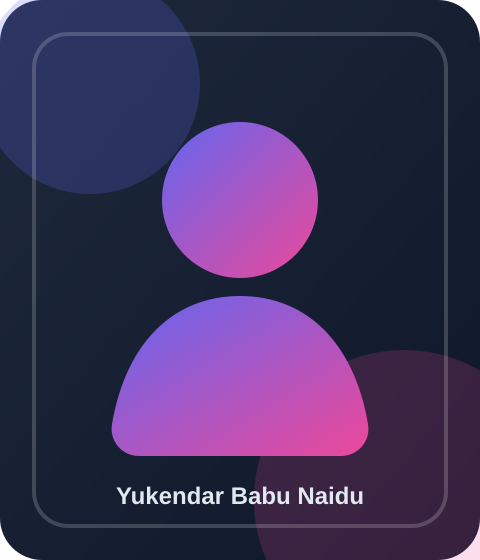

Curriculum Vitae
A professional overview of my academic background, technical skills, experience, and projects, presented as part of the DevQuest web application.

Lakshmi Nitya Tirunala
Email: your-email@example.com
Phone: Placeholder
LinkedIn: Placeholder
Location: Perth, WA
I am a motivated and detail-oriented Computer Science graduate currently pursuing a Master of Information Technology at the University of Western Australia. I enjoy building practical digital solutions that combine clean design, usability, and interactive front-end development.
About Me
I am a Computer Science graduate currently pursuing a Master of Information Technology at the University of Western Australia. My academic journey has helped me build a strong foundation in software development, problem-solving, and structured technical thinking. I am especially interested in web development because it combines creativity, logic, and user experience into one discipline.
I enjoy turning ideas into interactive and practical applications that are both visually appealing and functionally reliable. Through university coursework and project work, I have developed experience with HTML, CSS, JavaScript, responsive design, and database concepts. I am also becoming more confident with tools such as Git, GitHub, VS Code, and PostgreSQL as I continue to grow as a developer.
One of my recent projects is DevQuest, a multi-page interactive web application that teaches users the fundamentals of HTML, CSS, and JavaScript. Building this project has strengthened my understanding of front-end structure, styling systems, user interface design, and dynamic client-side functionality. It has also helped me think more carefully about usability, consistency, and presenting technical work in a professional way.
In addition to technical development, I value communication, discipline, and adaptability. My experience coaching children has strengthened my ability to explain ideas clearly, work patiently with different learning styles, and create supportive environments. I aim to continue developing into a well-rounded software professional who can contribute both technically and collaboratively in real-world teams.
Academic Background
Master of Information Technology
Institution: University of Western Australia
Period: 2025 - Present
Bachelor of Engineering in Computer Science and Engineering
Institution: MVJ College of Engineering, VTU, India
Academic Result: CGPA 8.6 / 10
Skills
DevQuest - Interactive Web Learning Platform
DevQuest is a multi-page interactive web application developed using HTML, CSS, JavaScript, and Bootstrap. The project is designed to teach users core web development concepts through a structured tutorial page, a dynamic quiz page, an AI reflection log, and a personalised CV page.
This project demonstrates structured UI design, client-side logic, and user interaction principles.
Additional Experience
Basketball Coach
Coached young children in a structured and supportive environment, helping them develop confidence, teamwork, and discipline. This role strengthened my communication, patience, leadership, and ability to adapt explanations for different learners.
Sources and Acknowledgements
The following references were used in preparing this assignment. Personal contact references are available on request.
- Daggitt, M., & Alvi, M. (2026). CITS5505 Agile Web Development lecture materials. University of Western Australia.
- Mozilla Developer Network. (n.d.). MDN Web Docs.
- W3Schools. (n.d.). HTML, CSS and JavaScript tutorials.
- OpenAI. (2026). ChatGPT [Large language model]. Used for planning, debugging support, and writing refinement.